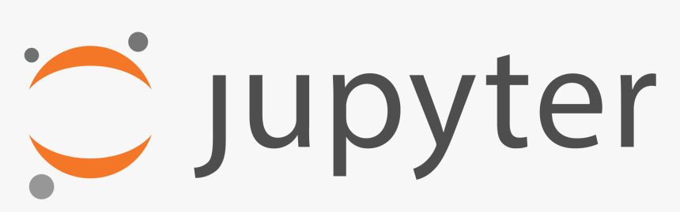
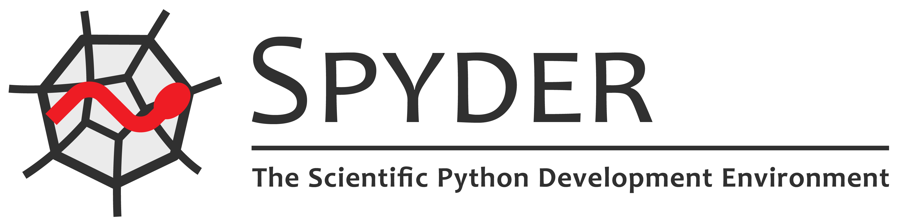

Python é uma linguagem de programação de alto nível, interpretada de script, imperativa, orientada a objetos, funcional, de tipagem dinâmica e forte. Foi lançada por Guido van Rossum em 1991. Atualmente, possui um modelo de desenvolvimento comunitário, aberto e gerenciado pela organização sem fins lucrativos Python Software Foundation. Apesar de várias partes da linguagem possuírem padrões e especificações formais, a linguagem, como um todo, não é formalmente especificada. O padrão na pratica é a implementação CPython.
A linguagem foi projetada com a filosofia de enfatizar a importância do esforço do programador sobre o esforço computacional. Prioriza a legibilidade do código sobre a velocidade ou expressividade. Combina uma sintaxe concisa e clara com os recursos poderosos de sua biblioteca padrão e por módulos e frameworks desenvolvidos por terceiros.
Python é uma linguagem de propósito geral de alto nível, multiparadigma, suporta o paradigma orientado a objetos, imperativo, funcional e procedural. Possui tipagem dinâmica e uma de suas principais características é permitir a fácil leitura do código e exigir poucas linhas de código se comparado ao mesmo programa em outras linguagens. Devido às suas características, ela é utilizada, principalmente, para processamento de textos, dados científicos e criação de CGIs para páginas dinâmicas para a web. Foi considerada pelo público a 3ª linguagem "mais amada", de acordo com uma pesquisa conduzida pelo site Stack Overflow em 2018 e está entre as 5 linguagens mais populares, de acordo com uma pesquisa conduzida pela RedMonk.
O nome Python teve a sua origem no grupo humorístico britânico Monty Python, criador do programa Monty Python's Flying Circus, embora muitas pessoas façam associação com o réptil do mesmo nome (em português, píton ou pitão).
Qual é a história de Python?
Guido Van Rossum, um programador de computador na Holanda, criou o Python. Ele começou em 1989 no Centrum Wiskunde & Informatica (CWI), inicialmente como um projeto de hobby para se manter ocupado durante o Natal. O nome da linguagem foi inspirado no programa de TV da BBC “Monty Python’s Flying Circus”, porque Guido Van Rossum era um grande fã do programa.
Guido Van Rossum publicou a primeira versão do código Python (versão 0.9.0) em 1991. Ela já incluía bons recursos, como alguns tipos de dados e funções para tratamento de erros.
O Python 1.0 foi lançado em 1994 com novas funções para processar facilmente uma lista de dados, como mapear, filtrar e reduzir.
O Python 2.0 foi lançado em 16 de outubro de 2000, com novos recursos úteis para programadores, como suporte para caracteres Unicode e um modo mais rápido de percorrer uma lista.
Em 3 de dezembro de 2008, foi lançado o Python 3.0. Ele incluía recursos como a função de impressão e mais suporte para divisão de números e tratamento de erros.
Construções
Construções de Python incluem: estrutura de seleção (if, else, elif); estrutura de repetição (for, while), que itera por um container, capturando cada elemento em uma variável local dada; construção de classes (class); construção de sub-rotinas (def); construção de escopo (with), como por exemplo para adquirir um recurso.
Tipo de dados
A tipagem de Python é forte, pois os valores e objetos têm tipos bem definidos e não sofrem coerções como em C ou Perl. São disponibilizados diversos tipos de dados nativos:
Tipo de dado
Descrição
Exemplo da sintaxe
bool
Booleano
True ou False
int
Número de precisão fixa, é transparentemente convertido para long caso não caiba em um int.
42 2147483648L
float
Ponto flutuante
3.1415927
complex
Número complexo
3+2j
list
Lista heterogênea mutável
[4.0, 'string', True]
tuple
Tupla imutável
(4.0, 'string', True)
range
Sequência de números imutável que pode ser transformada em lista
range(10) range(0, 10) range(0, 10, 1)
set, frozenset
Conjunto não ordenado, não contém elementos duplicados
Python também permite a definição dos tipos de dados próprios, através de classes. Instâncias são construídas invocando a classe (FooClass()), e as classes são instância da classe type, o que permite metaprogramação e reflexão. Métodos são definidos como funções anexadas à classe, e a sintaxe instância.método(argumento) é um atalho para Classe.método(instância, argumento). Os métodos devem referenciar explicitamente a referência para o objeto incluindo o parâmetro self como o primeiro argumento do método.
Antes da versão 3.0, Python possuía dois tipos de classes: "old-style" e "new-style". Classes old-style foram eliminadas no Python 3.0, e todas são new-style. Em versões entre 2.2 e 3.0, ambos tipos de classes podiam ser usadas. A sintaxe de ambos estilos é a mesma, a diferença acaba sendo de onde objeto da classe é herdado, direta ou indiretamente (todas classes new-style herdam de object e são instancias de type). As classes new-styles nada mais são que tipos definidos pelo usuário.
Quais são os principais recursos do Python?
Os seguintes recursos da linguagem de programação Python a tornam única:
Uma linguagem interpretada
O Python é uma linguagem interpretada, o que significa que executa diretamente o código linha por linha. Se houver erros no código do programa, ele será interrompido. Portanto, os programadores podem encontrar rapidamente erros no código.
Uma linguagem fácil de usar
O Python usa palavras semelhantes às do inglês. Ao contrário de outras linguagens de programação, o Python não usa chaves. Em vez disso, usa recuo.
Uma linguagem com tipos dinâmicos
Os programadores não precisam declarar tipos de variáveis ao escrever o código, porque o Python os determina no tempo de execução. Dessa forma, é possível escrever programas Python mais rapidamente.
Uma linguagem de alto nível
O Python está mais próximo das linguagens humanas do que outras linguagens de programação. Portanto, os programadores não precisam se preocupar com suas funcionalidades subjacentes, como arquitetura e gerenciamento de memória.
Uma linguagem orientada a objetos
O Python considera tudo como um objeto, mas também aceita outros tipos de programação, como estruturada e funcional.
O que são bibliotecas Python?
Uma biblioteca é uma coleção de códigos usados com frequência que os desenvolvedores podem incluir em seus programas Python para evitar escrever o código do zero. Por padrão, o Python vem com a Standard Library, que contém muitas funções reutilizáveis. Além disso, mais de 137 mil bibliotecas Python estão disponíveis para várias aplicações, incluindo desenvolvimento Web, ciência de dados e machine learning (ML).
Quais são as bibliotecas Python mais populares?
Matplotlib
Os desenvolvedores usam o Matplotlib para representar dados em gráficos bidimensionais e tridimensionais (2D e 3D) de alta qualidade. É frequentemente usado em aplicações científicas. Com o Matplotlib, é possível visualizar dados em diferentes gráficos, como de barras e de linhas. Você também pode criar vários gráficos de uma só vez, e é possível fazer a portabilidade dos gráficos entre todas as plataformas.
Pandas
O Pandas fornece estruturas de dados otimizadas e flexíveis para manipular dados de séries temporais e dados estruturados, como tabelas e matrizes. Por exemplo, use o Pandas para ler, gravar, mesclar, filtrar e agrupar dados. Muitas pessoas o usam para ciência de dados, análise de dados e tarefas de ML.
NumPy
O NumPy é uma biblioteca popular que os desenvolvedores usam para criar e gerenciar facilmente arrays, manipular formas lógicas e realizar operações de álgebra linear. É compatível com a integração com muitas linguagens, como C e C++.
Requests
A biblioteca Requests fornece funções úteis que são necessárias para o desenvolvimento Web. Você pode usá-la para enviar solicitações HTTP, adicionar cabeçalhos, adicionar parâmetros de URL, adicionar dados e executar muitas outras tarefas ao se comunicar com aplicações da Web.
OpenCV-Python
A OpenCV-Python é uma biblioteca que os desenvolvedores usam para processar imagens para aplicações de visão computacional. Ela fornece muitas funções para tarefas de processamento de imagens, como leitura e gravação de imagens simultaneamente, construção de um ambiente 3D com base em um ambiente 2D e captura e análise de imagens de vídeo.
Keras
A Keras é a biblioteca de rede neural profunda do Python, com excelente suporte para processamento de dados, visualização e muito mais. Ela é compatível com muitas redes neurais. Tem uma estrutura modular que oferece flexibilidade na escrita de aplicações de inovação.
Principais IDEs para desenvolvimento Python
Eclipse
Lançada em 2001 pela IBM, sobre a licença EPL (Eclipse Public Licence), o Eclipse é uma IDE para desenvolvimento em Python que também suporta diversas outras linguagens apenas com a instalação de plugins (C/C++, PHP, Java, Kotlin, entre outras).
Multiplataforma, é possível realizar seu download em diferentes sistemas operacionais como windows, linux e macOS.
Dentre suas principais características podemos citar:
Tecnologia baseada em plugins: Através da instalação de plugins, o desenvolvedor poderá incrementar as funcionalidades do Eclipse;
Fornece vários pacotes de desenvolvimento para o Python: Com o Eclipse podemos instalar diversos pacotes de desenvolvimento para facilitar a codificação de aplicações Python (seja web ou script).
O Eclipse é uma excelente IDE, muito utilizada no mercado. Seu uso facilita a criação de aplicações Python tanto para Desktop ou Web. O download do Eclipse poderá ser realizado em seu próprio site.
PyCharm
Lançado em 2010 pela JetBrains, o PyCharm é uma das IDEs mais utilizadas por quem programa em Python.
Multiplataforma, é uma IDE utilizada por diversas empresas, como Twitter, Symantec, HP, Groupon, entre outras.
Dentre suas principais vantagens, podemos citar:
Fornece análise de código;
Suporta desenvolvimento da Web com Django;
Possui suporte a testes unitários integrado;
Suporte para VCS;
Depurador gráfico;
Recurso de desenvolvimento remoto;
Preenchimento de código inteligente;
Integração com ferramentas e bibliotecas, como NumPy e Matplotlib, permitindo o desenvolvedor trabalhar com visualizadores de matriz e gráficos interativos;
Verificação dinâmica de erros, entre outros.
Além de todas essas vantagens, o PyCharm conta com desenvolvimento multitecnologias, onde, além do Python, oferece suporte para CoffeeScript, TypeScript, Cython, JavaScript, SQL, HTML/CSS, linguagens de modelo, AngularJS, Node.js e muitas outras.
O download do PyCharm é feito em seu próprio site, onde é possível acompanhar todas as suas novidades, recursos, suporte e muito mais.
Jupyter Notebook

Criada em 2014, derivado do IPython, o Jupyter Notebook é baseada na estrutura servidor-cliente, que permite a manipulação de documentos.
O nome do projeto, é uma referência às três principais linguagens de programação que são suportadas pelo Jupyter: Julia, Python e R.
o Jupyter Notebook independe de linguagem e suporta diversos ambientes de execução, entre elas: Julia, R, Haskell, Ruby, e o próprio Python.
Dentre suas principais vantagens, podemos citar:
Ambiente interativo de ciência de dados;
Excelente opção para quem inicia na ciência de dados;
Suporte a remarcações;
Permite a adição de componentes HTML de imagens e vídeos;
Edição de código atraente, entre outros.
Para instalar o Jupyter Notebook basta acessar o seu site, onde você também encontrará toda a sua documentação, blog, novidades e muito mais.
Spyder

Multiplataforma e de código aberto, o Spyder é outra opção para desenvolvedores Python, muito utilizado principalmente por cientistas de dados, já que possui integração com as principais bibliotecas como NumPy, SciPy, Matplotlib e IPython.
Lançado sobre a licença MIT em 2009, é mantido atualmente por uma equipe de desenvolvedores científicos em Python e pela comunidade.
Dentre suas principais características, podemos citar:
Combinação exclusiva das funcionalidades avançadas de edição, análise, depuração e criação;
Sistema de plugins;
Pode ser utilizado como uma biblioteca de extensão PyQt5;
Console interativo, entre outros.
O download do Spyder poderá ser feito em seu site, onde também é possível verificar seus plugins, componentes e muito mais.